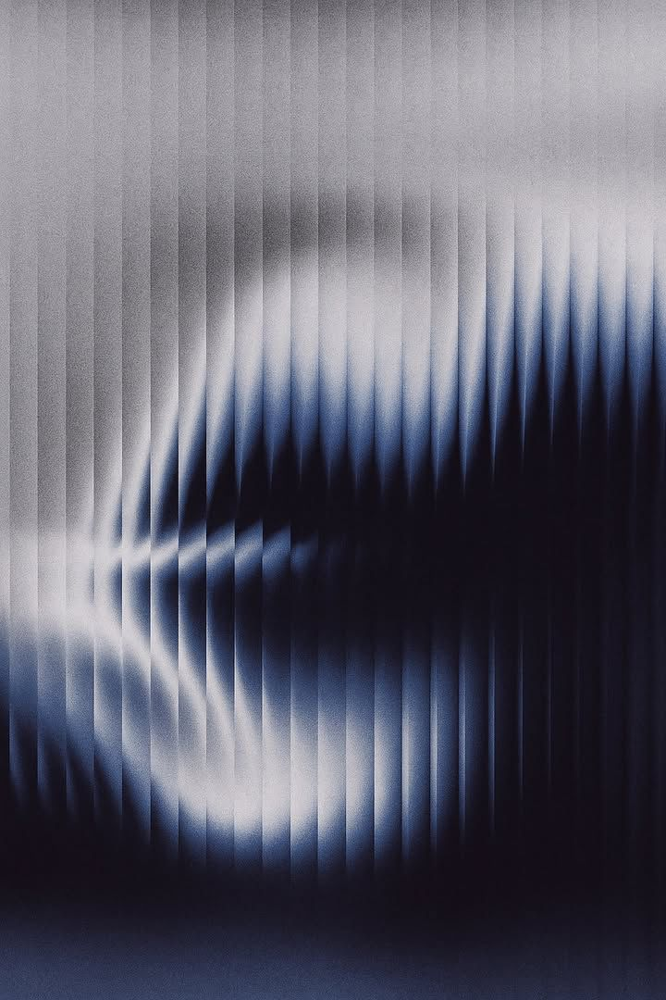

原子
Atoms最小的不可再分单元：单个圆点（含呼吸变体）、标注文字、角标、标签、引言、章节标题。它们是分子与复合组件的构件，多数定义在 base.css 的结构原语层与 components.css 的局部类里。徽章（__badge）已归位至复合区的 card-project —— 它是项目卡的可选子元素，非独立原子。
flex:none。三者厘清：.dot = 静态原子；@keyframes dot-halo = 呼吸动画（motion 原语，不是组件、不单独上页）；.dot--live = .dot + 跑 dot-halo 的 halo ::before 组成的呼吸变体原子，独立即可渲染（R2 已提为共享单一来源）。.dot · 静态原子当前唯一能独立渲染的态.dot--live · 呼吸变体已提为共享原子，独立渲染即呼吸；深底叠 .dot--live--on-dark 白光0.15em、muted 灰。用于「第 N 期基金」「募集中」等小标。position:absolute、默认 ink 描边 opacity .4。装饰策略卡 / 奖项卡 / 章节框的对角。下方放进一个 position:relative 小盒，让 tl 停左上、br 停右下。--c-tag-line 描边、半径 100。生产里默认 opacity:0 / grid-template-rows:0fr，卡片 hover 才展开——此处在 .atom-tags 作用域内强制展开以便预览（不影响 .card-strategy 内的 hover 行为）。常春藤资本专注深科技领域，重点关注人工智能、芯片半导体与智能制造，更相信人与技术长期积累所创造的价值。
.rn 罗马数字（Instrument Serif 斜体 36）+ .cn 中文标题（Noto Serif SC 36 / -0.64），基线对齐、accent 蓝。复合进 .sec-box 用作带框标题；III. 章节单独左对齐内联。分子
Molecules由原子组合而成、可独立使用的小部件：按钮、邮箱胶囊、社交圆钮、带框章节标题、跑马灯。玻璃质感组件放在图底 / navy 舞台上以显出折射。（地址卡与奖项卡均属卡片，已上移复合区 Card 家族，分别为 card-location / card-award。）
.dot--live）。多层 inset 高光 + 蓝调描边环（组合 .glass-ring，与 nav 共用单一来源）+ 镜面高光（::before）。质感滤镜 --glass-feel 与 nav 共享。.big 放 30px）。微信 / 小红书 / LinkedIn。.rule.top/.bot）+ 居中蓝框（.sec-box，框线 accent .4）+ 对角蓝角标 + .bt 标题。注意 .sec-band 有负 margin（rail−page-x），故放在有内距的舞台里。本预览不加 sec-anim（避免被 motion.css 隐藏）。--rail、上下网格横线、accent-wash 渐变底。__track translateX −50% 38s linear 循环（轨道内容需复制一份才无缝），hover 暂停。.name 名称 + .dia 菱形分隔。复合
Composites由原子 + 分子拼装的完整功能块。先以 Card 家族（card- 前缀） 聚类四种卡片——策略 / 项目 / 奖项 / 地址，体现「文件树」式层级；再列其真实使用环境滚动奖项 ticker，以及全站统一注入的导航与页脚。nav / footer 用真实自定义元素 <site-nav> / <site-footer>（partials.js 单一来源）。
同属一类、解剖结构各异的卡片用统一前缀 card- 聚类（「文件树」式层级感）。R3 已落地：canonical 与全部页面均已采用 card-strategy / card-project / card-award / card-location 规范名。Pass 2 已落地：新增 card-member（团队卡）与 card-project--wall（名称墙变体），子页 hero .hax 也已抽 canonical（详见 COMPONENT-STANDARDS.md §四.4 / §八）。
.tags 从 0fr 展开。
__badge）。hover 上浮、底部霜玻璃块（__plate）由下生长、描述（.d）从 0fr 展开。一条目并列两态：含 / 不含 __badge —— 徽章是可选子元素，由标记是否包含该元素控制（无徽章可加表意修饰符 --no-badge 微调布局），canonical 本就支持，无需改 CSS。
688728__badge--no-badge不写 __badge 子元素即可card-project（共用 __bg / __foot），只是默认/hover 编排不同：默认整卡居中显示企业名（__name--wall，透明磨砂卡透出整页背景视频）；hover → 项目图淡入 + 底部满宽磨砂带（__foot）升起承全文描述 + 名称（__name）移到带顶上方 14px。深底卡再叠 --ondark（portfolio ondark JS 采样判定）让 hover 名称翻白。网格 .rgrid 属页面布局，留 portfolio 内联。__photo，hover 微缩放）+ 玻璃名牌（__plate，顶部双线高光 + 蓝色 corner L 角，质感沿用 card-project__plate 语言）+ 姓名/职务（__txt .t/.d）。hover 上浮、描边变蓝、柔和投影显形。网格 .team-grid（5 列 + 响应式）属页面布局，留 team 内联。
card-award；基础样式作用域在 .ticker .card-award（容器 .ticker 保留原名，为滚动 organism）。单卡预览须包进 .ticker > __track > __group，并给 __track 加 animation:none 让它静止。card-location。--sh / --hk 调整城市纹理对位。
幸福里E座5楼
冠君大厦10楼11室
.ticker，不并入 card 家族）。__track translateX −50% 44s linear 无缝循环（两组 __group 镜像复制），hover 暂停。每张 card-award 各自可 hover navy 翻色。这是 card-award 的真实使用环境。.glass-ring，与 btn 共用单一来源；质感滤镜 --glass-feel 共享）。真实结构由 <site-nav> 注入（logo / 链接 / 语言切换）。生产里 position:fixed + 滚动收起（site.js 的 nav-tuck，本页不引）；舞台用 .navstage 作用域改回 static 以便预览。<site-footer> 注入。其 markup 带 data-reveal，因本页不引 site.js，已用作用域覆盖强制显影。满宽展示：footer 是 layout 层全宽 composite，半宽下 footer__top 会把标语挤到逐字折行，故此条目整行铺满。布局骨架
Layout页面级结构原语，全部定义在 base.css。它们不是独立可见的 UI，而是承托内容的容器、网格与全屏背景层。蓝图竖线 / 导轨在生产里靠 site.js 滚动加 .in 才绘入，本页用手动加 .in + inline 高度做静态小 demo。
--maxw 1760、水平居中、position:relative（为网格 / 导轨提供定位上下文）。页面所有 header / section / footer 是它的直接子级，z-index:1 盖在网格与视频背景之上。（条纹 = 视口溢出留白）
position:absolute inset:0、z-index:0、不响应指针。每条 .vline 1px、--c-grid、opacity .34，落在卡片之间的「沟」上。homepage 有两版：策略区 3 栏 → 2 竖线（sA/sB），项目区 4 栏 → 3 竖线（p1/p2/p3）；切分法都是把 rail 间宽度等分（2 线落 1/3·2/3，3 线落 1/4·2/4·3/4）。motion.css 默认 scaleY(0)，父加 .in 绘入——下方两版均手动加 .in + inline 高度静态展示，淡线为 rail 上下文。z-index:90（绘于 hero/footer 之上，只有 nav z100 盖得住）。左轨 left:--rail、右轨 right:--rail，1px、--c-grid opacity .55。默认 opacity:0，父加 .in 渐显——下方手动加 .in 展示。--page-x 80、position:relative。所有内容区块的水平留白基准，与 nav / footer 的胶囊宽度对齐。position:fixed inset:0、object-fit:cover、z-index:0（夹在奶白 body 与内容 .page 之间）。透明度由 --pgop 驱动，site.js 按当前 section 设值、.9s 平滑过渡。本页仅文字说明，不放视频以免遮挡预览。opacity:var(--pgop,0) · z-index:0
奶白 body → 视频(z0) → 内容 .page(z1)